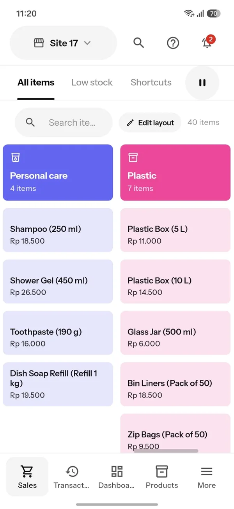
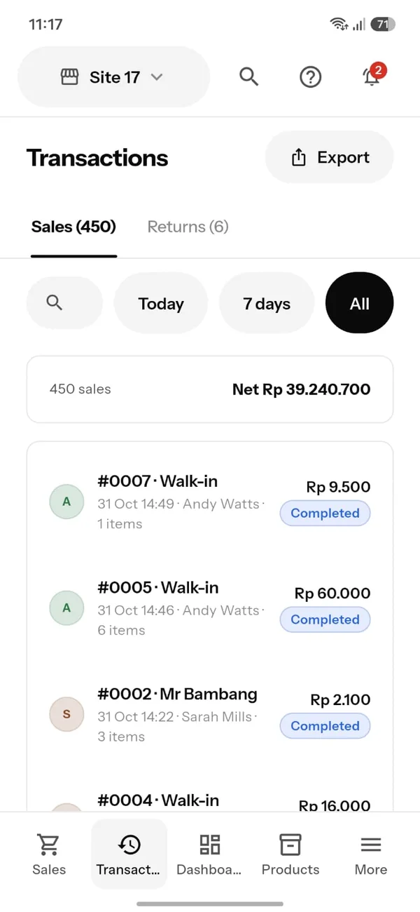

Informatics student & software engineer building native tools, 3D engines, and mobile apps.
I write C# and WinUI 3 for Windows, Python and PyOpenGL for real-time graphics, and Flutter and Kotlin for mobile. CTF forensics and reverse engineering shape how I test everything else.
A procedural world renderer that turns map data into terrain and buildings you can fly, drive, or walk through.
Architecture & Rendering
The world is divided into chunks that are generated and released as the camera moves, so nothing loads a full map up front. Fly, drive, and walk modes share one world state.
Key Implementation Details
Atmospheric scattering, day/night cycle, and weather
Simulated traffic
Minimap, directions, and an in-world clock
Windows desktop · 2026
Veggify
Windows
C#
WinUI 3
.NET 8
Open-Meteo
A crop planner that reads the terrain: pick a place and it scores what to plant from elevation, slope, and climate.
Architecture & Rendering
The analysed area is a block of 16×16-cell chunks on an absolute lat/lon lattice, with 100 to 400 m cells and up to nine chunks per side. Chunks load in parallel and are cached in memory and on disk, so panning or re-analysing only downloads what is missing. A z-buffered software rasteriser draws the 3D surface and keeps 20,000+ cells interactive.
Key Implementation Details
Marching-squares contour lines computed per chunk with global levels, so lines stay continuous across chunk borders
Weather page with 48 h charts, a 7-day forecast, soil by depth, water balance, growing degree-days, and spray windows
Crop suitability grades with rule-score bars and a profit-per-year estimate
Headless tests for chunk stitching, caching, contours, Open-Meteo parsing, and the renderer
One Flutter codebase for a register on desktop, tablet, and phone.


Architecture & Layout
A single Flutter codebase adapts from a desktop register to a phone. On the phone, a five-tab bar covers Sales, Transactions, Dashboard, Products, and More, and a site switcher at the top scopes every screen to one shop.
Key Implementation Details
Register with a colour-coded item grid per category, search, shortcuts, a low-stock view, and an editable layout
Transaction history split into sales and returns, filtered by today, 7 days, or all, with a net total and export
Records, finances, and mortality reports for a sengon plantation, with machine-learning loss prediction on top.
The problem
A sengon smallholding in Gebang, Jember kept track of trees, seedling purchases, timber sales, and tree deaths on paper receipts. About 10% of notes were lost or piled up, and nobody could say reliably why seedlings died, so losses of up to 20% went unexplained. Sengonis puts all of it in one web system.
Two roles, one workflow
Owners manage users, validate transactions, verify and archive reports, and watch the dashboard. Field officers register and update trees, log daily transactions as drafts, and file mortality and financial reports for the owner to verify. Drafts stay editable until validated, and every change leaves an audit trail.
Random Forest prediction
Loss is forecast with Random Forest Regression over tree records, finance, mortality reports, and financial summaries. When there is not enough history the dashboard says so instead of showing a number, and results are shown with supporting context rather than as a bare figure.
Analysis & design
Built as a software analysis and design course project at Universitas Jember. The documentation covers a context diagram and DFD levels 0 to 2, an ERD of seven tables, flowcharts per feature, a use-case model (UC01 to UC21), and activity diagrams with written scenarios.
Key Implementation Details
3D plantation map with terrain, trees drawn at their recorded height, and per-block zoom, redraw, and delete
Dashboard per period: population, population chart, cash flow, and mortality trend
Weather panel with a fieldwork advisory from Open-Meteo
Input validation: no negative tree counts, valid amounts, and correctly formatted dates
Light and dark themes
Business case
The system request sets two targets: cut the risk of loss from about 20% to 15% through documented tree conditions and early detection of death causes, and bring lost or stacked paper records from about 10% to zero.